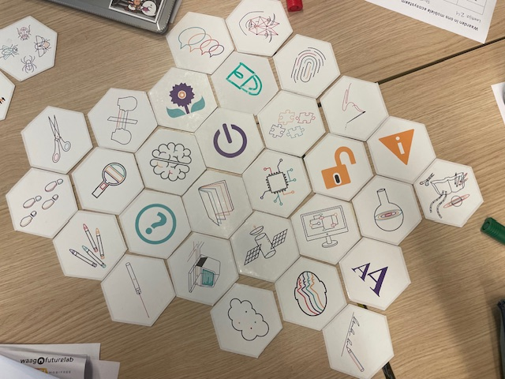

De Waag
..-..-2024
De waag
Bij deze weekly nerd kwam een de waag bij ons langs. Danny en Marit hadden het over het mobiele ecosysteem en de public stack.
Tests
Danny en Marit zijn met een groot project bezig en wilde daarom wat testen met ons doen zodat ze wat data konden verzamelen. Deze workshop is begin punt van proces.
We begonnen met de 4 kwadranten test.Daarbij werden er vragen gesteld en moesten wij in een kwadrant staan met het antwoord op de vraag.
Daarna hebben we een formulier ingevuld waar je je waardes bij een onderwerp zoals operating system en cloud services moest leggen en zeggen of je die mist of niet.
Daarna moesten we in een groepje de optimale telefoon maken. Dit is uiteindelijk de telefoon geworden.

De symbolen moeten de waardes in onze optimale telefoon voorstellen. Onze optimale mobiel moet een aanknop hebben, daarnaast moet hij goed beschermt, goed voor de natuur, transparant kwa data, data moet gewijzigd kunnen worden, en wij moeten bepalen wat er wordt opgeslagen, het moet een laser hebben, goede service hebben om onze vragen te kunnen beantwoorden, het moet connected zijn met het internet, het moet meerdere sims hebben, meerdere fonts, een scherm hebben, de achterkant moet kunnen worden aangepast, met natuurlijke goede warnings als je iets aanpast, en het moet een chip hebben.